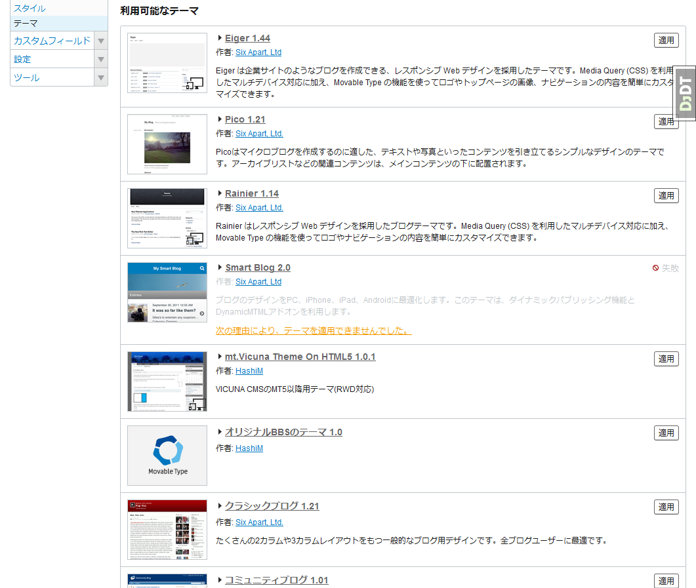
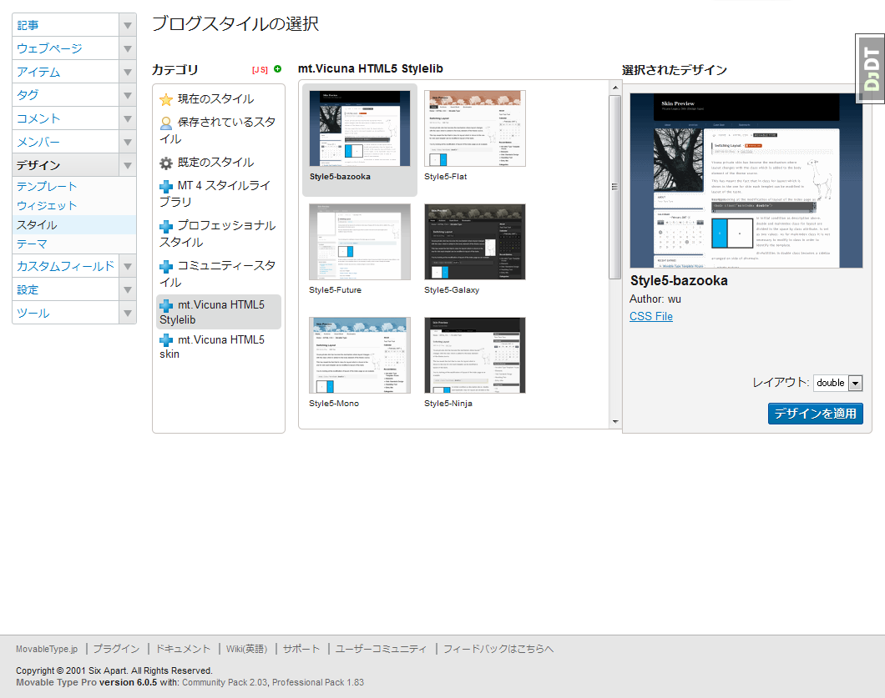

mt.Vicuna HTML5 ver.1.0.2
更新履歴
2015/12/27 ver.1.0.2リリース
2014/10/13 ver.1.0.1リリース
2014/06/27 ver.1.0.0リリース
mt.Vicuna HTML5って何？
mt.Vicunaとは，3ping.orgのwu氏が作成し，その後Oscar氏が引き継いだ，Movable Type用のテンプレートテーマの事を言います．
現在のところ，mt.Vicunaには mt.Vicuna Origin とmt.Vicuna Simple が存在しています．
Origin / Simple は，どちらもXHTML1.0 Strictで作成されていましたが，それを私HashiMが独自にHTML5に書き換え，レスポンシブウェブデザイン(以下RWD)にも対応するよう改良しました．
ただ，これにより従来のmt.Vicunaスキンとの互換性がなくなってしまったため，結果として新テンプレートテーマとして作り上げたのがmt.Vicuna HTML5となります．
対応する Movable Type について
テーマ機能が搭載された，Movable Type 5.0 以降であればほぼ問題なく動作します．できるだけ最新のバージョンをお使いください．
勿論，Movable Type 6.0 以降にも対応しています． ただし，ダイナミックパブリッシングには対応していません．
また，カスタムフィールドは一切使っていませんので，Open Source版でも動作します．
インストール方法
- まず，本ページの上部に表示されている，tar.gzアイコンまたはzipアイコンよりアーカイブファイルをダウンロードします．
- アーカイブファイルを解凍すると，mt-theme-mtVicuna-HTML5-1.x.xフォルダの中にthemesというフォルダが有るはずですので，themesフォルダをMovableTypeをインストールしたフォルダ内にコピー(またはFTPアップロード)します．
- Movable Typeの管理画面にアクセスし，適用させたいブログのダッシュボード画面に移っておきます(ダッシュボードの▼リンクよりブログを選択する)．
- 左側の作業一覧内にある「デザイン」内にある「テーマ」を選択しますと，利用可能なテーマの中に「mt.Vicuna Theme On HTML5 1.x.x」があるはずですので，「適用」ボタンをクリックします．
- すると，「テーマ "mt.Vicuna Theme On HTML5"を適用しました。 設定を有効にするために再構築してください。」と表示されますが，ここでは再構築を行わずにテンプレートの編集画面に移動してください．
- テンプレートの編集画面に移動したら，モジュールテンプレート内にある「全般設定」モジュールテンプレートを編集します．
ここでは，アイキャッチのクラス設定，Google Analyticsによるアクセス解析取得設定，カテゴリ/月別アーカイブのエントリ部分の表示設定，SNS用のボタンを表示するかどうかの設定等を行います．
詳しくは「全般設定モジュールテンプレートでの各種設定について」を御覧ください． - 「全般設定」モジュールテンプレートの編集が終了したら，テンプレートを保存し，全体の再構築を行ってください．
{kind=link}
StyleCatcherによるスキン変更について
MovableType 5.0 以降でmt.Vicuna Origin / mt.Vicuna Simple に触れたことがある方は既にご存知かと思いますが，mt.Vicuna HTML5でも，StyleCatcherによるスキンの変更に対応しております．
ただし，1.0.0でのStyleCatcherスキンは，Origin 版と同様style-vega，style-mono，style-galaxy，style-future，style-flatの5つしかスキンがありませんでした．
もちろん時間の関係上5つしか調整ができなかっただけでして，1.0.1以降のバージョンでは，以前のmt.Vicunaで公開されていたスキンの一部についてHTML5用に随時調整のうえ，ライブラリとして搭載しています．
{kind=link}
現在のところ，以下の9つをライブラリとして登録しています(注:http://kita2.net/上では正式に表示されてませんのであしからず)．
- Style5-Vega
- Style5-Mono
- Style5-Galaxy
- Style5-Flat
- Style5-Future
- Style5-Bazooka
- Style5-SmartCanvas
- Style5-Origin
- Style5-Ninja
旧スタイルライブラリの様に16個全部を入れるのは難しいかもしれませんし，元々のスキンがかなり古いものなのですが，SmartCanvasとNinjaができているので，これらのサブスキンぐらいは追加しようかな…とは考えています．
RWD対応について
HTML5版のキモだったりするRWDですが，HTML5+CSS3(メディアクエリ)+Jqueryスクリプトにより実現しています．
- 840px以上は，PC用として従来通り2カラム・3カラムの表示としています．
- 840px未満は，タブレット用としてシングルカラム固定とし，グローバルナビゲーション部分の表示をタブレット用に変更しています．
- 480px以下は，スマートフォン用としてスマートフォン専用のシングルスタイルとし，グローバルナビゲーションについてもスマートフォン専用メニューを適用しています．
{kind=link}
{kind=link}
{kind=link}
…ただ，タブレットでの表示についてはあまり確認しておりません(手元にタブレットの実機がないこともありますが…)．
「ここをこうした方が…」という要望は随時受け付けております．issue等で叫んでください(ぉ
必須プラグインについて
このテーマの使用に際して，必須となるプラグインは特にありません．
あると便利なプラグインについて
Assetylene Plugin
アイテム挿入時に独自のテンプレートを自動で埋め込むプラグインです．私も常用しています．
プラグイン自体はオリジナルでもOscar氏のカスタム版でも問題なく動作します．
なお，このテーマにもAsset Insertionモジュールテンプレートを入れています．PageBute Plugin
ダイナミックパブリッシングを使用していない静的ページについて，ページ分割をすることができるプラグインです．
どうやら最新バージョンからはGitHubに移行しているようです．ダウンロードもそちらから出来るようになっています．
テンプレートは特に用意していません(用意してしまうと，必須プラグインとなってしまうので(^^;)が，一応私の方でも使っていますので，カテゴリーブログ記事リストでのテンプレートについて晒しておきます．参考にしてください．
<div class="entry"><$MTCategoryCount setvar="limit"$>
<MTPageContents count="50" navi_count="9">
<MTEntries sort_order="$entry" limit="$limit">
<MTIf name="entry_sh">
<$MTInclude module="ヘッドライン" ettl="h1"$>
<MTElse>
<$MTInclude module="エントリー概要"$>
</MTIf>
<$MTPageSeparator$>
</MTEntries>
</MTPageContents>
<MTIf name="limit" gt="50">
<MTPagination>
<MTPaginationHeader>
<ul class="rpnavi">
<MTIfPaginationPrev>
<li><a href="<$MTPaginationPrev$>" title="Prev"><<</a></li>
</MTIfPaginationPrev>
</MTPaginationHeader>
<MTIfPaginationCurrent>
<li class="current"><$MTPaginationLink element="number"$></li>
<MTElse>
<li><a href="<$MTPaginationLink$>"><$MTPaginationLink element="number"$></a></li>
</MTIfPaginationCurrent>
<MTPaginationFooter>
<MTIfPaginationNext>
<li><a href="<$MTPaginationNext$>" title="Next">>></a></li>
</MTIfPaginationNext>
</ul>
</MTPaginationFooter>
</MTPagination>
</MTIf>
<$MTInclude module="アーカイブページへのリンク"$>
著作権 / ライセンスについて
一応，著作権は保持していますが，改変については特に制限していません．
GitHubリポジトリにより公開されていますので，改変したものが逆に当リポジトリに反映される可能性もゼロではありません．Fork / Pullリクエストも大歓迎ですので，お気軽にどうぞ．
尚，ライセンスについては，mt.Vicuna / mt.Vicuna Simple と同様，MITライセンスとします．